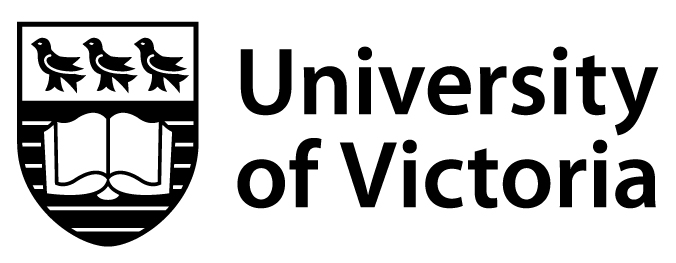

The Press Record Project
The Press Record project is the Praxis Studio's new Game Studies initiative. Between 2025 and 2035, we aim to:
- Train and support researchers in composing and producing critical video essays about video games.
- Collaborate with game studios and developers across Canada to help preserve indie games and render them accessible for post-secondary research, teaching, and learning.
- Develop a reciprocal workflow for essayists that articulates game preservation and gameplay documentation with videographic criticism to support the longevity of games media and indie games in Canada.
- Build and maintain a collection of gameplay footage with descriptive metadata for classroom use.
- Publish our methods, findings, and video essays in Media Studies venues.
- Spark and foster an inclusive, positive-force Game Studies culture at UVic.
News and Events
- 27 January: We've now tested and fine-tuned an original metadata schema for video gameplay footage, complete with a set of controlled vocabularies. We're applying it to our gameplay footage collection and plan to publish it soon.
- 15 December: Hooray! We completed the first research-ready version of our gameplay footage collection for use by UVic Media Studies faculty, staff, and students. It's searchable and contains over 200 clips.
- 17 October: We're internet official! We're currently collecting and describing gameplay footage for Media Studies 360 at UVic. We are also busy preparing a special issue of The Digital Review on "Video Essays about Video Games."
Who We Are
We are a group of researchers who study the aesthetics, cultures, politics, and preservation of games by blending theory with practice:
- Annie Beingessner (UVic English)
- Callum Carroll-Ireton (UVic Media Studies + Computer Science)
- Sara Humphreys (UVic Academic and Technical Writing)
- Maya Wei Yan Linsley (UVic English)
- Regan Mandryk (UVic Computer Science)
- April Rogers (UVic English)
- Jentery Sayers (UVic Media Studies and English; PI)
- Charlie Susheski (UVic Anthropology)
- Christina Woods (UVic Media Studies and English)
- Chris J. Young (UTM Library)
Contact Us
The Press Record project is based at the Praxis Studio for Comparative Media Studies, which is located in UVic's Clearihue building. You can email our principal investigator, Jentery Sayers (he | him), at jentery@uvic.ca.
Thanks for visiting. We built this site with files from Mike Choi's "Paper" theme and last updated it on 28 January 2026.
